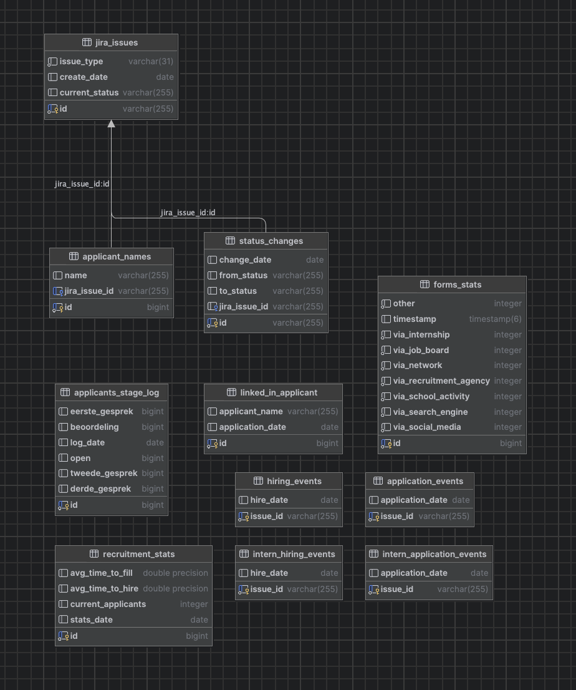

Data Models
This section provides an overview of the data models used in the recruitment dashboard system. The database schema is illustrated in the diagram below:

Tables and Their Purpose
jira_issues
This table stores the issues imported from Jira. Each issue has the following attributes:
- id: The unique identifier for the Jira issue.
- issue_type: The type of issue (e.g., ApplicantIssue, InternIssue).
- create_date: The date when the issue was created.
- current_status: The current status of the issue.
applicant_names
This table stores the names of applicants associated with Jira issues. Each entry has the following attributes:
- id: The unique identifier for the applicant name record.
- name: The name of the applicant.
- jira_issue_id: The identifier of the related Jira issue.
status_changes
This table tracks the status changes of Jira issues. Each entry has the following attributes:
- id: The unique identifier for the status change record.
- change_date: The date when the status change occurred.
- from_status: The previous status of the issue.
- to_status: The new status of the issue.
- jira_issue_id: The identifier of the related Jira issue.
applicants_stage_log
This table logs the number of applicants at various stages of the recruitment process. Each entry has the following attributes:
- id: The unique identifier for the log entry.
- log_date: The date when the log was recorded.
- open: The count of applicants in the 'open' stage.
- beoordeling: The count of applicants in the 'beoordeling' stage.
- eerste_gesprek: The count of applicants in the 'eerste gesprek' stage.
- tweede_gesprek: The count of applicants in the 'tweede gesprek' stage.
- derde_gesprek: The count of applicants in the 'derde gesprek' stage.
linked_in_applicant
This table stores information about applicants who applied via LinkedIn. Each entry has the following attributes:
- id: The unique identifier for the LinkedIn applicant record.
- applicant_name: The name of the applicant.
- application_date: The date when the application was received.
hiring_events
This table logs the hiring events for applicants. Each entry has the following attributes:
- id: The unique identifier for the hiring event record.
- issue_id: The identifier of the related Jira issue.
- hire_date: The date when the applicant was hired.
intern_hiring_events
This table logs the hiring events specifically for intern applicants. Each entry has the following attributes:
- id: The unique identifier for the intern hiring event record.
- issue_id: The identifier of the related Jira issue.
- hire_date: The date when the intern was hired.
application_events
This table logs the application events for applicants. Each entry has the following attributes:
- id: The unique identifier for the application event record.
- issue_id: The identifier of the related Jira issue.
- application_date: The date when the application was submitted.
intern_application_events
This table logs the application events specifically for intern applicants. Each entry has the following attributes:
- id: The unique identifier for the intern application event record.
- issue_id: The identifier of the related Jira issue.
- application_date: The date when the intern application was submitted.
forms_stats
This table stores statistics from the Google Forms survey regarding how applicants found out about Avisi. Each entry has the following attributes:
- id: The unique identifier for the forms stats record.
- timestamp: The date and time when the data was recorded.
- via_network: The count of applicants who found out via network.
- via_social_media: The count of applicants who found out via social media.
- via_job_board: The count of applicants who found out via job board.
- via_school_activity: The count of applicants who found out via school activity.
- via_internship: The count of applicants who found out via internship.
- via_recruitment_agency: The count of applicants who found out via recruitment agency.
- via_search_engine: The count of applicants who found out via search engine.
- other: The count of applicants who selected 'other'.
recruitment_stats
This table stores overall recruitment statistics. Each entry has the following attributes:
- id: The unique identifier for the recruitment stats record.
- stats_date: The date when the stats were recorded.
- avg_time_to_fill: The average time in days to fill a vacancy.
- avg_time_to_hire: The average time in days to hire an applicant.
- current_applicants: The current number of active applicants.
status_changes
This table tracks the status changes of Jira issues. Each entry has the following attributes:
- id: The unique identifier for the status change record.
- change_date: The date when the status change occurred.
- from_status: The previous status of the issue.
- to_status: The new status of the issue.
- jira_issue_id: The identifier of the related Jira issue.
applicants_stage_log
This table logs the number of applicants at various stages of the recruitment process. Each entry has the following attributes:
- id: The unique identifier for the log entry.
- log_date: The date when the log was recorded.
- open: The count of applicants in the 'open' stage.
- beoordeling: The count of applicants in the 'beoordeling' stage.
- eerste_gesprek: The count of applicants in the 'eerste gesprek' stage.
- tweede_gesprek: The count of applicants in the 'tweede gesprek' stage.
- derde_gesprek: The count of applicants in the 'derde gesprek' stage.
linked_in_applicant
This table stores information about applicants who applied via LinkedIn. Each entry has the following attributes:
- id: The unique identifier for the LinkedIn applicant record.
- applicant_name: The name of the applicant.
- application_date: The date when the application was received.
hiring_events
This table logs the hiring events for applicants. Each entry has the following attributes:
- id: The unique identifier for the hiring event record.
- issue_id: The identifier of the related Jira issue.
- hire_date: The date when the applicant was hired.
intern_hiring_events
This table logs the hiring events specifically for intern applicants. Each entry has the following attributes:
- id: The unique identifier for the intern hiring event record.
- issue_id: The identifier of the related Jira issue.
- hire_date: The date when the intern was hired.
application_events
This table logs the application events for applicants. Each entry has the following attributes:
- id: The unique identifier for the application event record.
- issue_id: The identifier of the related Jira issue.
- application_date: The date when the application was submitted.
intern_application_events
This table logs the application events specifically for intern applicants. Each entry has the following attributes:
- id: The unique identifier for the intern application event record.
- issue_id: The identifier of the related Jira issue.
- application_date: The date when the intern application was submitted.